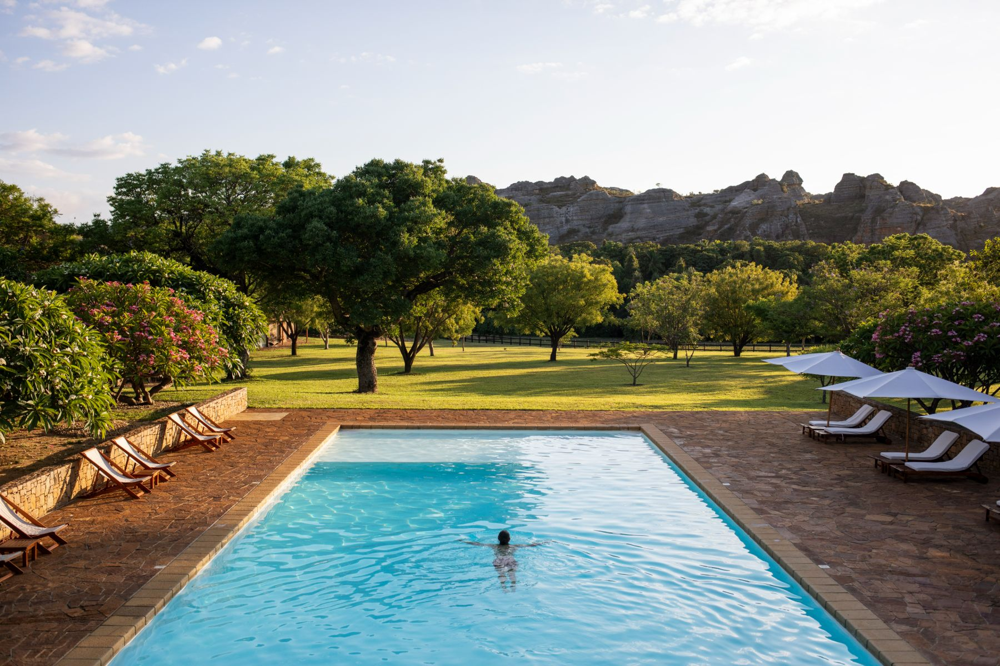
Le Jardin du Roy01 / 15
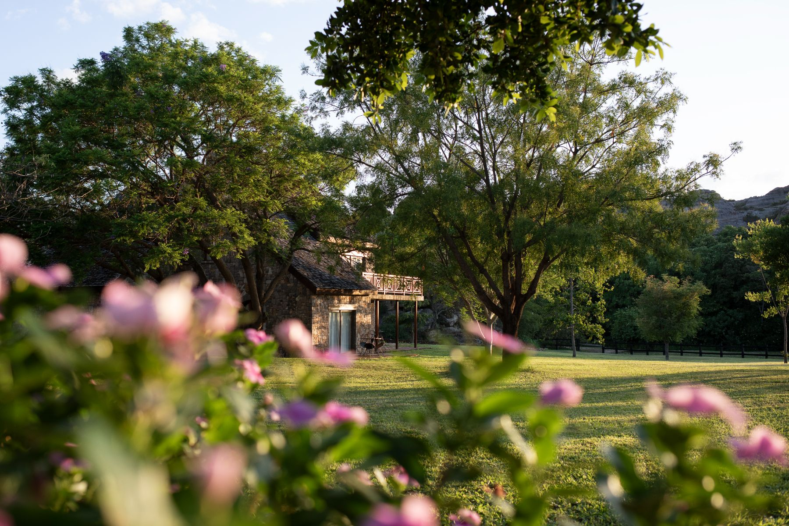
Le Jardin du Roy02 / 15
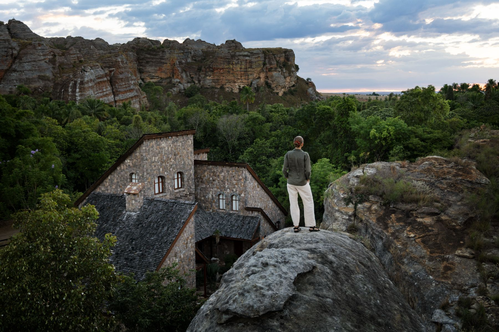
Le Jardin du Roy03 / 15
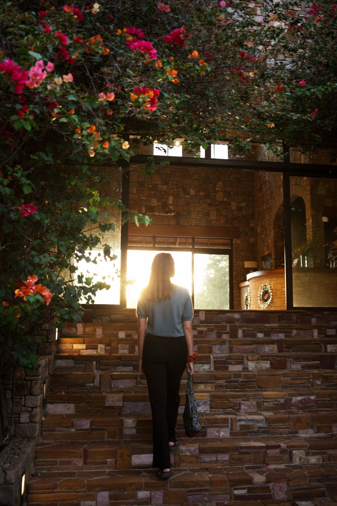
Le Jardin du Roy04 / 15
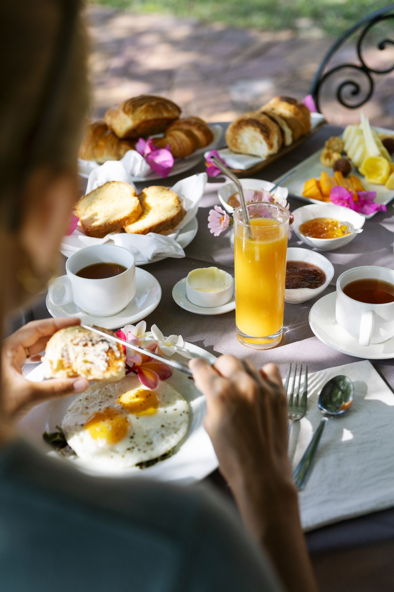
Le Jardin du Roy05 / 15
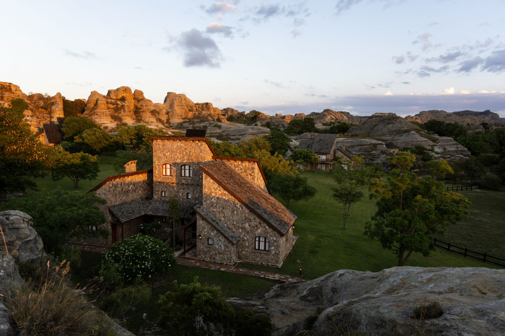
Le Jardin du Roy06 / 15
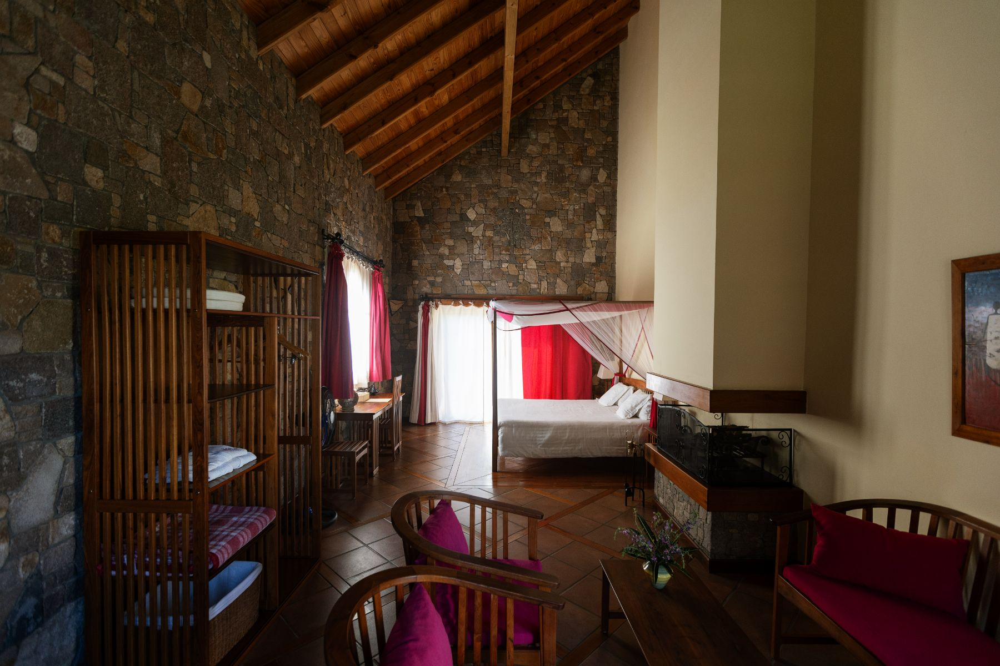
Le Jardin du Roy07 / 15
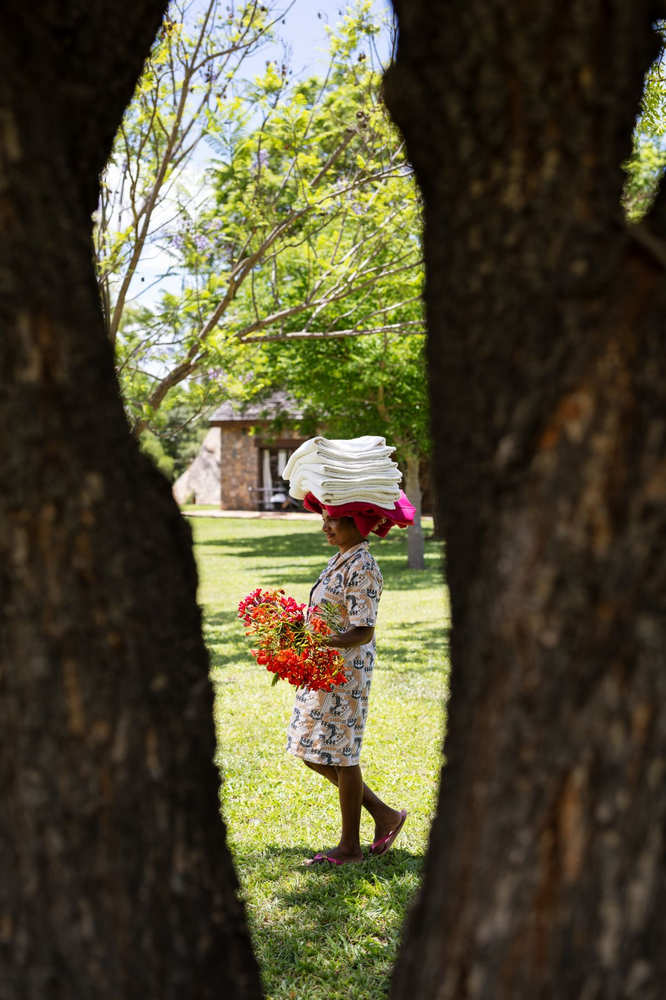
Le Jardin du Roy08 / 15
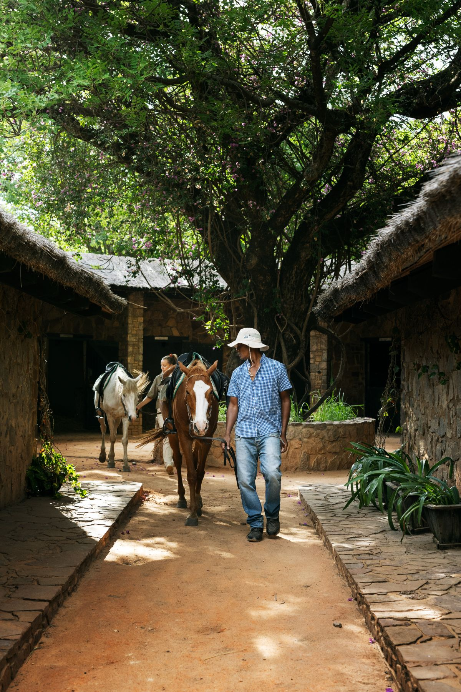
Le Jardin du Roy09 / 15
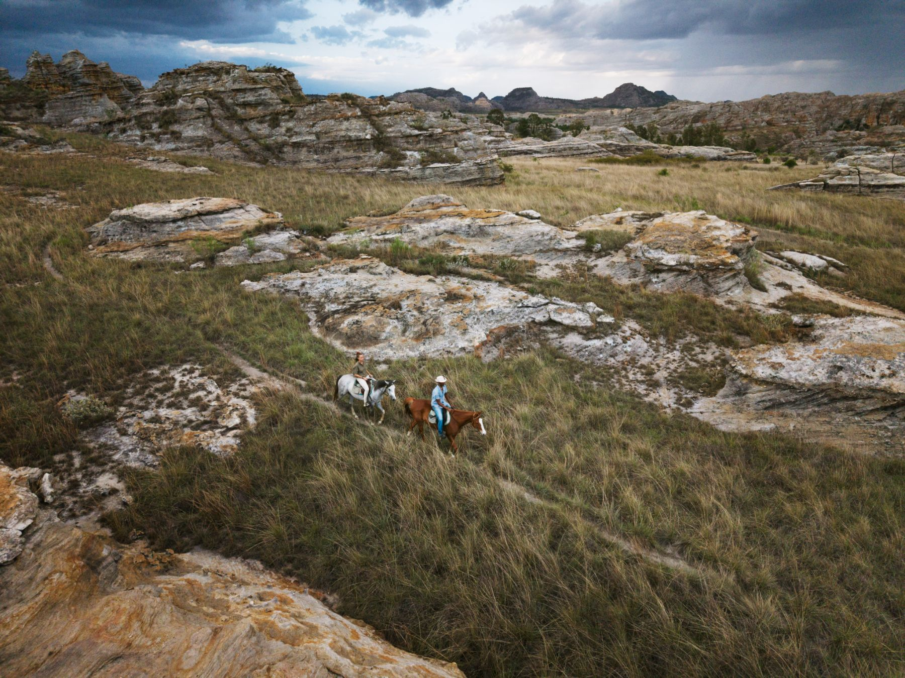
Le Jardin du Roy10 / 15
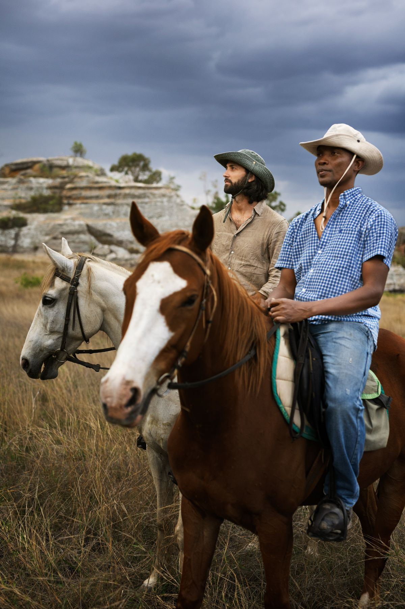
Le Jardin du Roy11 / 15
Le Jardin du Roy12 / 15
Le Jardin du Roy13 / 15
Le Jardin du Roy14 / 15
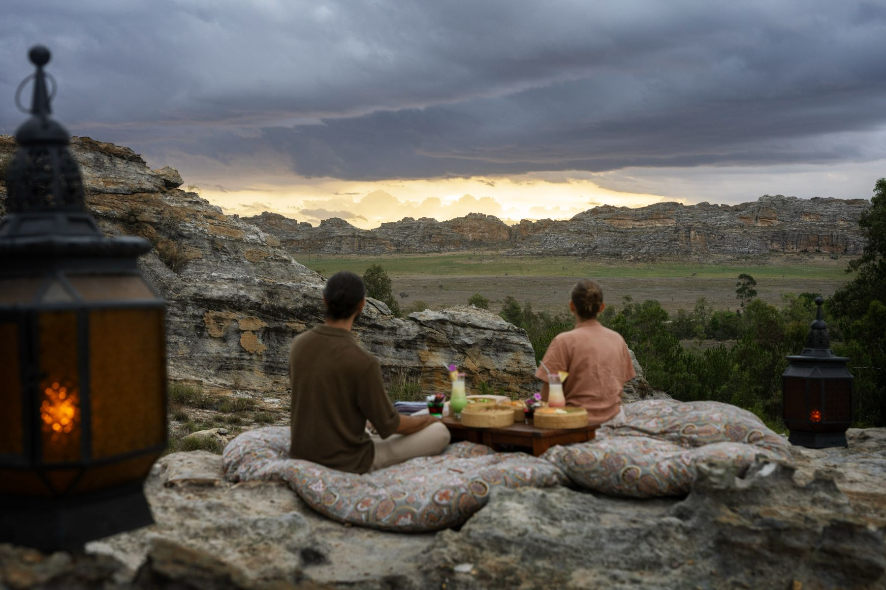
Le Jardin du Roy15 / 15